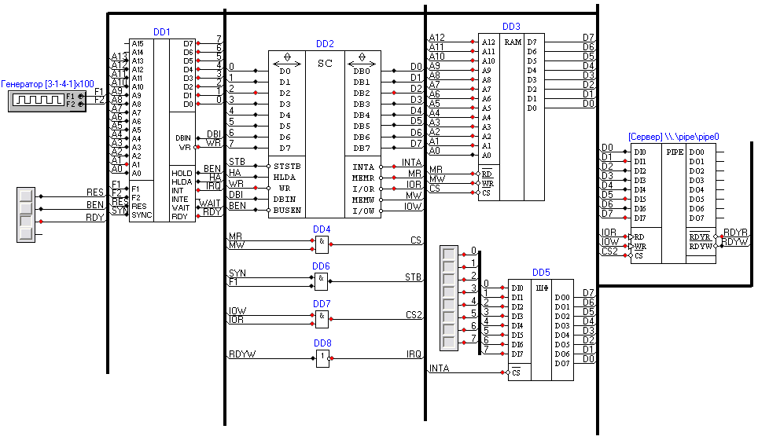
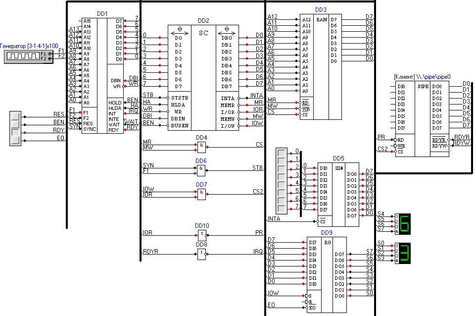

Компоненты типа «Канал передачи данных» позволяют нескольким экземплярам программы обмениваться данными между собой. Присутствуют как простые, так и сложные (с управляющими сигналами) варианты.
Следующие две схемы позволяют проверить правильность работы таких элементов
Передатчик:
Приемник:
В данном случае оба экземпляра программы были запущены на одной машине. Есть возможность использования в сети, для чего нужно указывать полные UNC-имена программных каналов (см. описания соответствующих компонентов).
Сигналы готовности RDYR и RDYW используются в качестве сигналов запроса прерывания. Шинные формирователи в схемах служат для ввода кода команды RST.7 (или другого, код задается линейкой переключателей слева от ШФ) в ответ на сигнал INTA. Регистр в приемнике играет роль порта вывода и служит для вывода полученного байта на индикаторы.
При работе приемник передает байты данных (с увеличивающимся значением), приемник их принимает и высвечивает на индикаторах.
Процессор в схеме передатчика выполняет программу:
| Адрес | Мнемоника | Комментарий |
| Точка входа | ||
| 0000h | XRA A | Очистка аккумулятора. Начальный передаваемый байт равен нулю |
| 0001h | LXI SP, 1000h | Загрузка указателя стека |
| 0004h | EI | Разрешаем обработку прерываний |
| 0005h | JMP 0005h | Вечный цикл. Здесь могут происходить прерывания |
| Процедура обработки прерываний (ISR) | ||
| 0038h | INR A | Увеличиваем значение аккумулятора |
| 0039h | OUT 00h | Передаем байт по каналу |
| 003Bh | EI | Разрешаем обработку прерываний |
| 003Ch | RET | Выходим из ISR |
Приемник:
| Адрес | Мнемоника | Комментарий |
| Точка входа | ||
| 0000h | XRA A | Очистка аккумулятора. Начальный передаваемый байт равен нулю |
| 0001h | LXI SP, 1000h | Загрузка указателя стека |
| 0004h | EI | Разрешаем обработку прерываний |
| 0005h | JMP 0005h | Вечный цикл. Здесь могут происходить прерывания |
| Процедура обработки прерываний (ISR) | ||
| 0038h | IN 00h | Принимаем байт |
| 003Ah | OUT 00h | Выводим его на индикаторы |
| 003Ch | EI | Разрешаем обработку прерываний |
| 003Dh | RET | Выходим из ISR |